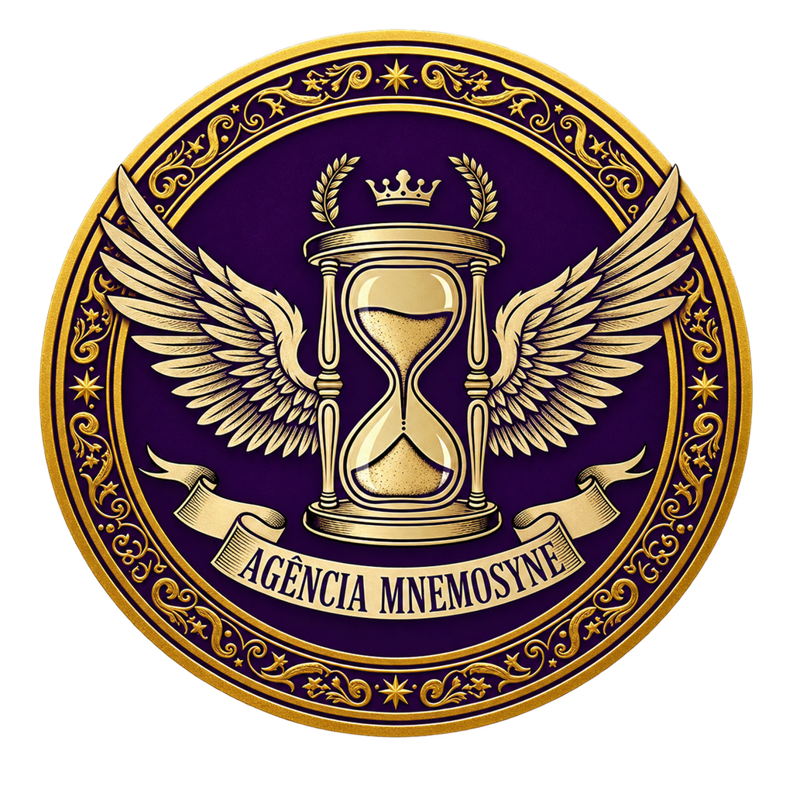
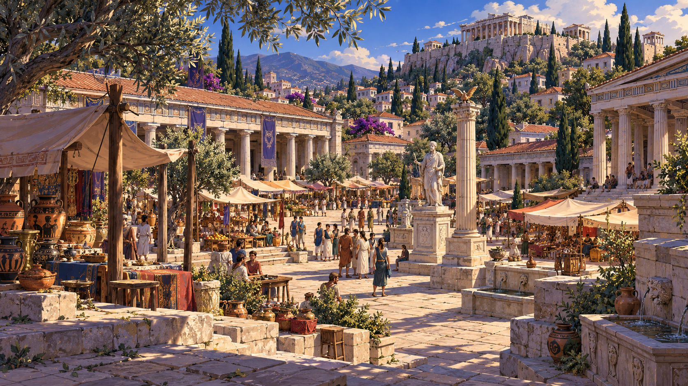
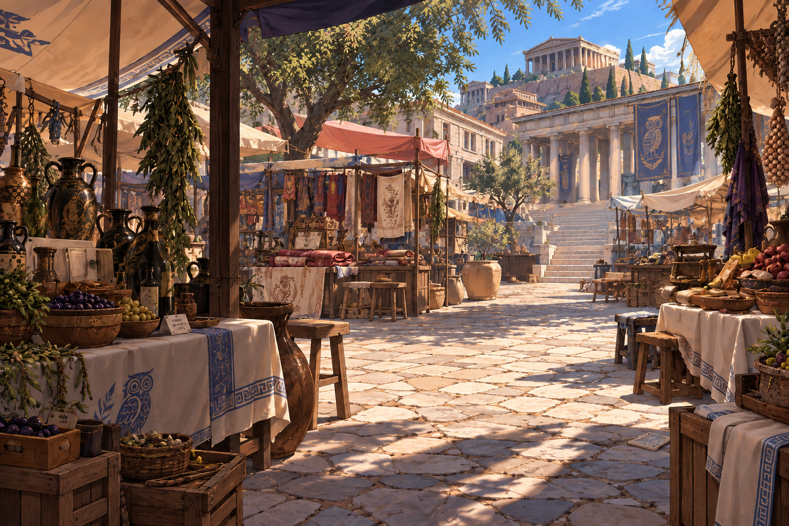
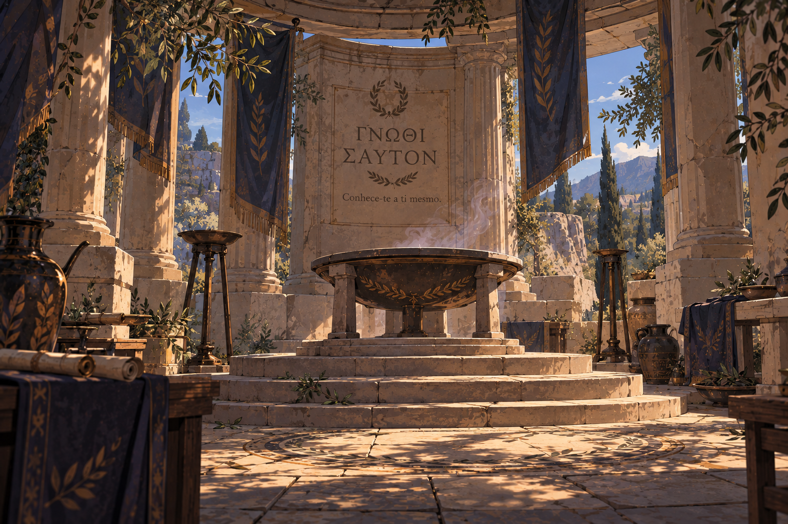
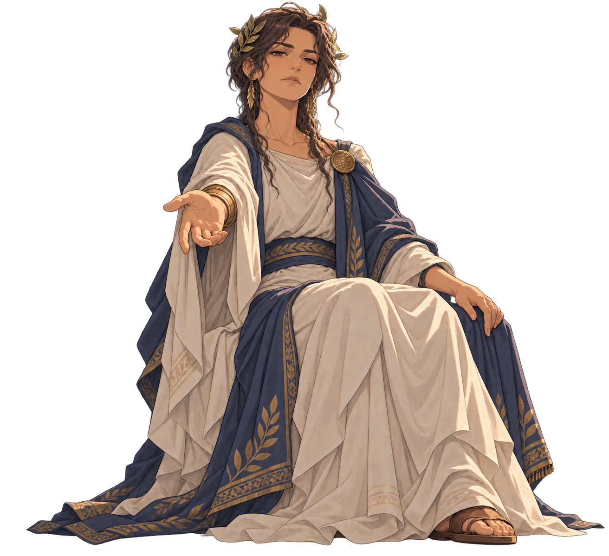
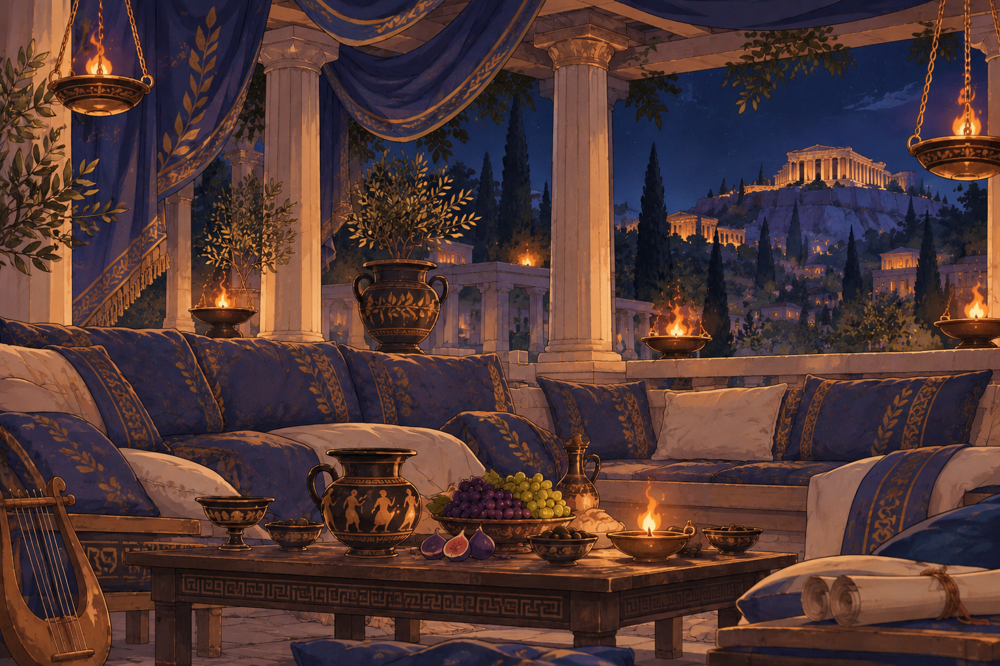
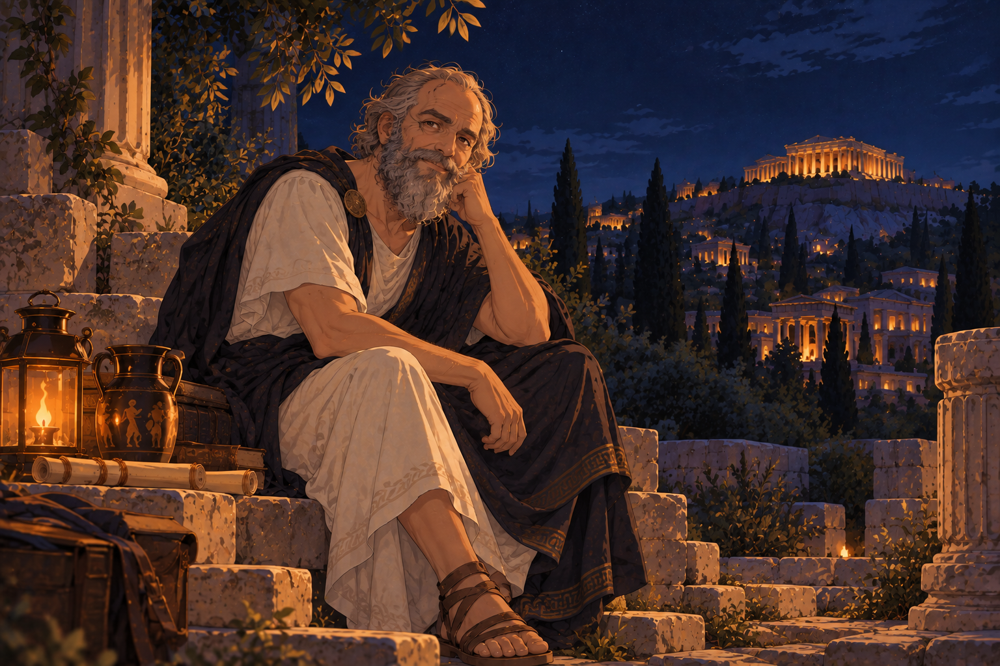

EMBLEMA DESBLOQUEADO
Agência Mnemosyne
Memórias, rastros e ecos que insistem em permanecer.
anotação 02 · arquivo 03
Sísifo é uma delas.
Encontrei outro registro dele.
Atenas.
E, aparentemente, um homem que tinha o péssimo hábito de fazer perguntas.
SOFIA
Incômodo como?
Porque até agora o crime desse homem parece ser… conversar.
SOFIA
Temos um procurado. Uma Ágora. Jovens confusos. E um relatório escrito por um sujeito condenado a empurrar uma pedra pela eternidade.
O que poderia dar errado?

cidade de perguntas
Ruas cheias. Respostas nunca definitivas.

RASTRO 01 — ÁGORA

RASTRO 02 — MERCADO

RASTRO 03 — ORÁCULO


RASTRO 04 — SIMPÓSIO

LOCAL DESCONHECIDO
ordem do eclipse · registro posterior
SOFIA
Ele sabia.
Sísifo sabia como isso terminava.
Então por que continuou seguindo os rastros?

Memórias, rastros e ecos que insistem em permanecer.